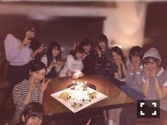
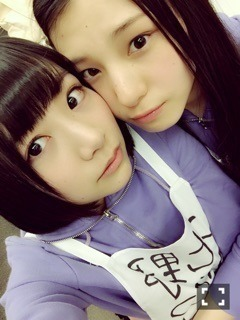
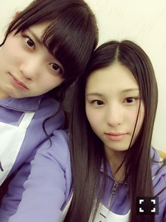

| 2015/03 29 Sun | 思い出が消える前に_(. . *)v ol.18 |
みなさんこんばんはー！
さがらいおりです！
2 / 28
2 期生 2 周年記念日ー！
去年は参加出来なかったけど
今年は参加できました♪♪

皆でお祝い出来て楽しかった♡
~いおり庵~
握手会の時何のクリームつけてるの？
V'CTORIA'S SECRETの
SHEER LOVEだよー！
何してる時が一番楽しい？
お笑い見てるとき
テレビ見てるとき
ライブしてるとき
部屋の片付け、模様替えしてるとき
かな(∩´∀`∩)
テレビ見てるとき
ライブしてるとき
部屋の片付け、模様替えしてるとき
かな(∩´∀`∩)
生きてる源の残りの 41 %はなんなの？
お笑い♡
伊織は前髪作らないの？
作らないよー！！
この春何か挑戦してみたいことありますか？
この春何か挑戦してみたいことありますか？
映画を沢山観たい！
いおりちゃんNGKの新喜劇観に行ったことあるの？
まだないけど、今年は行ってみたい！
いおりはANNの 1 部も 2 部も聴いてるの？
いおりはANNの 1 部も 2 部も聴いてるの？
全部は聴いてないけど、時間あるときに
聴いてるよ♪♪
いおりんのサラサラヘアーの秘訣はなに？！
自分の髪質に合ったシャンプーを探すこと？かな
いおりちゃんはどんなヘアアレンジが好き？
いおりちゃんはどんなヘアアレンジが好き？
1 日休みの時は三つ編みしてるよ(*^^)v
いおりは受験生の頃の思い出ある？
いおりは面接練習ばっかりしてた記憶があるなー(。-∀-)
最近何かハマってる食べ物ある？
んー、
チョコレートかな♡
チョコレートかな♡
いおりの今のブームなものは？
お笑いDVDとかお笑いグッズ集めてる！
いおりが仕事してて一番楽しいときってなに？
ライブかなー♡
もし 2 期生でバンド組むとしたらなにやりたい？
いおりはベースがやってみたい！
いおりは移動時間の時何する？
いおりは移動時間の時何する？
お笑い見るかコメント読むか寝る！
junkは聴かないんですか？
junkはメガネびいきが好き♡
いおりは何貰ったら嬉しいの？
いおりは何貰ったら嬉しいの？
なんでも嬉しいよ( ´艸｀)
髪の毛切りたい！って思わないの？
思わないな～、、
髪の毛が短いと落ち着かない気がする(´･ω･`)
髪の毛が短いと落ち着かない気がする(´･ω･`)
握手会で話すこと忘れちゃったらどうすればいい？
これからはいおりも話題考えておくー(>_<)！
いおりは楽器とか出来るの？
楽器という楽器を触ったことがない、、(‥ ;)
いおりんは花粉症？
いおりんは花粉症？
ううん、大丈夫！！
いおりんのチャームポイントは？
いおりんのチャームポイントは？
なんだろー、えくぼと髪の毛かなー♪♪
伊織ちゃんは好きなアイドルいる？
いおりはまゆゆさんが好き♡
それから真夏さん♡
いおりへのブログのコメントが遅くなっても読んでくれますか？
それから真夏さん♡
いおりへのブログのコメントが遅くなっても読んでくれますか？
もちろん！！全部読んでるよ :)
前々回のブログのコメントの質問
前々回のブログのコメントの質問
ほぼ答えましたー！
今日はじょしらくのオーディションでした！

合格出来なくて悔しかったです(>_<)！
また機会があったときに
選ばれるように頑張ります！！
来てくださった方
ありがとうございました♪♪

未央奈、日奈子、琴子、れなち
がんばって下さい(｀･ω･´)
告知
4 / 1 Rの法則
Samurai ELO
OVERTURE
STREET JACK
Smart
NOGIBINGO!4 も観てください！
i o r i .

コメント(255)
2015/03/29 21:18